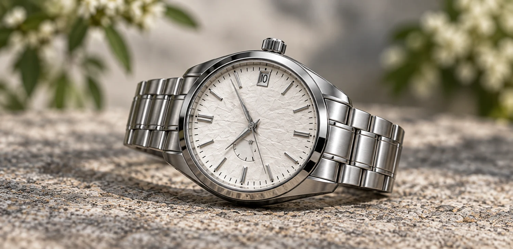
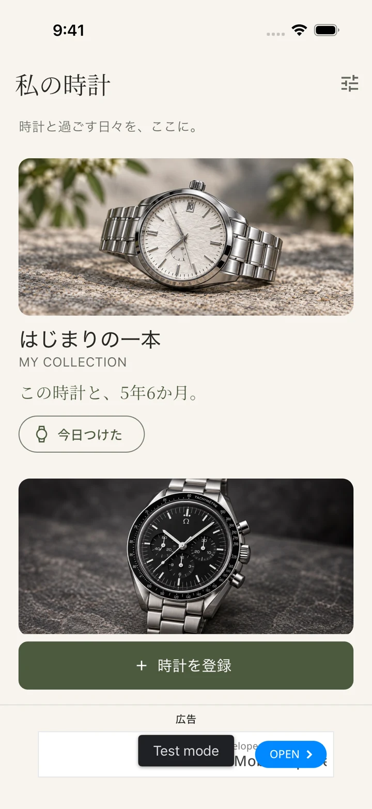
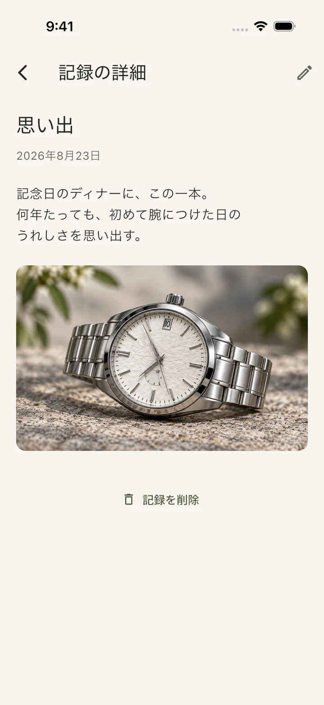
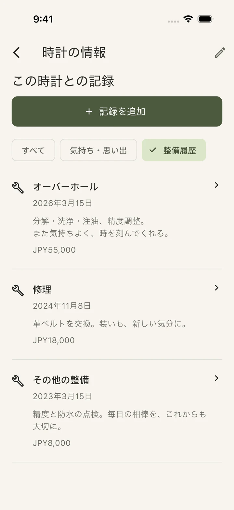

MY COLLECTION好きな一本を、いつでも眺める。
01 / COLLECTION大切な時計に、
大切な時計に、
自分だけの記録帳を。
写真と名前を並べて楽しむ、あなたのコレクション。ブランドや型番、購入店や金額も、時計ごとにひとまとめ。手に入れてからの年月が、愛着をそっと教えてくれます。
登録は時計の名前だけで。写真や詳しい情報は、あとから。
A JOURNAL FOR YOUR WATCHES
腕時計の管理と、思い出の記録。
迎えた日の気持ちも、整備の履歴も。
あなたと時計の物語を、Tokileaに。
全機能無料・広告付き ／ アカウント登録不要


MORE THAN A COLLECTION
初めて腕につけた日のうれしさ。
大切な日に選んだ理由。整備を終えて、戻ってきた安心感。
時計と過ごす時間には、残しておきたいことがたくさんあります。
Tokilea（トキレア）は、腕時計の写真・思い出・整備履歴・着用記録を、
一本ごとにまとめて保存できる時計管理アプリです。
MADE FOR YOUR TIMEPIECES
眺める。思い出す。手入れする。
そのすべてを、ひとつの記録に。
写真と名前を並べて楽しむ、あなたのコレクション。ブランドや型番、購入店や金額も、時計ごとにひとまとめ。手に入れてからの年月が、愛着をそっと教えてくれます。
登録は時計の名前だけで。写真や詳しい情報は、あとから。
記念日のディナーに選んだ一本。毎朝、手に取るときの気持ち。写真と一言を日付付きで残せます。過去の気持ちも大切に、あなたと時計の物語が積み重なります。
気持ちと整備の記録は、時計ごとのタイムラインへ。

写真と一言が、
いつかの宝物になる。

オーバーホール、修理、電池交換。作業内容・依頼先・費用を記録して、次の手入れの参考に。整備の写真も添付でき、次回の予定日は自分で設定できます。
「今日つけた」を押すだけで着用を記録。最後に着けた日も確認できます。
整備予定日はアプリ内で確認できます。OS通知はありません。
YOUR OWN QUIET SPACE
明るいアイボリーも、落ち着いたダークも。
写真と記録に、ゆっくり向き合える佇まいです。
ボタンで実際のアプリ画面を切り替えられます。
START WITH ONE WATCH
きっちり埋めなくても大丈夫。
残したくなったときに、少しずつ。
必須なのは名前だけ。愛称でも、モデル名でも。写真を添えれば、あなたの一本に。
迎えた日の思い出や、ふと感じた愛着を。短い一言から始められます。
着用や整備のたびに記録を追加。振り返るほど、時計との時間が見えてきます。
QUESTIONS & ANSWERS
使い始める前に、
知っておきたいこと。
Tokilea（トキレア）は、腕時計の写真、気持ちや思い出、整備履歴、着用記録を一本ごとに保存する時計管理アプリです。入手日からの経過年月や、自分で設定した次回整備予定日も確認できます。
すべての機能を無料で利用できます。広告付きで、アプリ内課金やサブスクリプションはありません。時計の登録本数による有料化もありません。
はい。大切な一本から使えます。時計の価格やブランドによる登録条件はありません。名前だけで登録でき、写真や購入情報はあとから追加できます。
実施日、整備の種類、作業内容、依頼先、費用と通貨、写真を記録できます。次回の整備予定日は、実施済みの履歴とは別に自分で設定できます。予定日はアプリ内で確認する仕様で、OS通知はありません。
アカウント登録は不要です。時計の記録と取り込んだ写真は端末内に保存されます。クラウド同期や、アプリ内でのバックアップ・復元機能はありません。広告の配信には通信を利用します。
iOS版の商品ページは、このページのApp Storeボタンから確認できます。Android版は公開準備中です。アプリは日本語・英語に対応し、ライトモード・ダークモードを選べます。
TOKILEA / トキレア
あなたと時計の物語を、少しずつ。
App Storeで見る全機能無料・広告付き。Android版は公開準備中です。